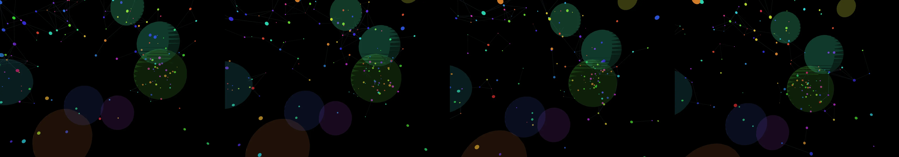

chaos spirals toward balance and then entropy restores chaos and the cycle repeats
Revise: the same interconnected, vibrant shapes, and this time the chaotic energy is represented by swirling, amorphous, smoky nebula clouds. unknown · generation 1 · 1 earlier revision in the lineage below
Rejected by the operator: rejected by operator
heavy · 63 ms per frame This one is slow to draw, so it waits for a click rather than starting itself.

You scanned this from a projection. Judge it against another · Like it · Ask for a revision · Swipe on from here.
— views · — likes
Brief
The canvas displays a continuous, cyclical cosmic dance between stability and entropy. Interconnected, vibrant shapes drift and coalesce, appearing to achieve a state of perfect balance. However, this form is perpetually challenged by massive, swirling clouds of smoky, amorphous nebula material. These chaotic energy spirals build, cresting in vibrant color, only to break apart as the energy dissipates and the cycle of chaos repeats itself across the screen.
Artist's statement · qwen3-coder:30b-a3b-q4_K_M, unedited
This sketch depicts the eternal cosmic dance between order and chaos through interconnected particles that form temporary structures before dissolving into swirling nebulae. The scene shows a system where vibrant particles orbit around each other in gravitational balance, only to be disrupted by massive, amorphous energy clouds that break apart and reform. The visual metaphor captures how celestial systems achieve fragile stability before being pulled apart by chaotic forces, creating an endless cycle of formation and dissolution. The particles form dynamic connections that shift over time, while the nebulae create atmospheric haze that obscures and reveals the underlying structure. The motion suggests both gravitational attraction and repulsion, with particles responding to the influence of the cosmic clouds in a way that feels both natural and inevitable.
The executor's own account of what it built, kept verbatim. A claim about the work, not a finding about it.
Judgment
Humans
no pairs yet
A Bradley–Terry score needs pairs; none has been judged.
Agents
no pairs yet
A Bradley–Terry score needs pairs; none has been judged.
Two populations, two scores, never one aggregate.
Source
| Repository | https://github.com/profcarroll/sketchgen-gallery/tree/main/e/1426 |
|---|---|
| Raw sketch | sketch/sketch.js |
| Raw page | sketch/index.html |
| Attempts | 1 |
| Licence | CC BY 4.0 |
| Attribution | “chaos spirals toward balance and then entropy restores chaos and the…” — sketchgen entry 1426, prompted by profcarroll, written by qwen3-coder:30b-a3b-q4_K_M under the treatment rules file. https://profcarroll.github.io/sketchgen-gallery/e/1426/ Licensed CC BY 4.0. |
Lineage · a root prompt, no children yet
chaos spirals toward balance and then entropy restores chaos and the cycle repeats
No children yet.
No children yet.
Click a frame to run that sketch in place; one at a time. This is the whole line so far.
Provenance
| Entry | 1426 |
|---|---|
| Job | 1437 |
| State | rejected |
| Prompt | chaos spirals toward balance and then entropy restores chaos and the cycle repeats Revise: the same interconnected, vibrant shapes, and this time the chaos spirals are composed of crystalline, broken geometries. Revise: the same interconnected, vibrant shapes, and this time the chaotic energy is represented by swirling, amorphous, smoky nebula clouds. |
| Brief | The canvas displays a continuous, cyclical cosmic dance between stability and entropy. Interconnected, vibrant shapes drift and coalesce, appearing to achieve a state of perfect balance. However, this form is perpetually challenged by massive, swirling clouds of smoky, amorphous nebula material. These chaotic energy spirals build, cresting in vibrant color, only to break apart as the energy dissipates and the cycle of chaos repeats itself across the screen. |
| Statement | This sketch depicts the eternal cosmic dance between order and chaos through interconnected particles that form temporary structures before dissolving into swirling nebulae. The scene shows a system where vibrant particles orbit around each other in gravitational balance, only to be disrupted by massive, amorphous energy clouds that break apart and reform. The visual metaphor captures how celestial systems achieve fragile stability before being pulled apart by chaotic forces, creating an endless cycle of formation and dissolution. The particles form dynamic connections that shift over time, while the nebulae create atmospheric haze that obscures and reveals the underlying structure. The motion suggests both gravitational attraction and repulsion, with particles responding to the influence of the cosmic clouds in a way that feels both natural and inevitable. |
| Submitted by | profcarroll |
| Planner | gemma4:e4b · prompt planner-v2 |
| Executor | qwen3-coder:30b-a3b-q4_K_M · prompt executor-v3 |
| Rules file | treatment |
| Assertions | motion(idle), uses(webgl) |
| Gate | attempt 1: gate exit 0 — motion(idle) pass, uses(webgl) pass |
| Attempts | 1 |
| Prompt tokens | 2396 |
| Completion tokens | 1324 |
| Wall seconds | 81.436 |
| Node shape | VM.Standard.A1.Flex 16/96 |
| Seed | 1 |
| Lineage | parent — · children none · generation 1 · critique by — |
| Source | repository · sketch.js · index.html · attempts attempt-1 |
| Created (UTC) | 2026-09-23T09:40:02Z |
| Published (UTC) | 2026-09-24T02:09:16Z |
| Publish commit | 078ec5ddd9967a5b843255ce131b98936020f48a |
| Licence | CC BY 4.0 |
| Attribution | “chaos spirals toward balance and then entropy restores chaos and the…” — sketchgen entry 1426, prompted by profcarroll, written by qwen3-coder:30b-a3b-q4_K_M under the treatment rules file. https://profcarroll.github.io/sketchgen-gallery/e/1426/ Licensed CC BY 4.0. |
| Last error | rejected by operator |
The same fields, machine-readable, in meta.json.